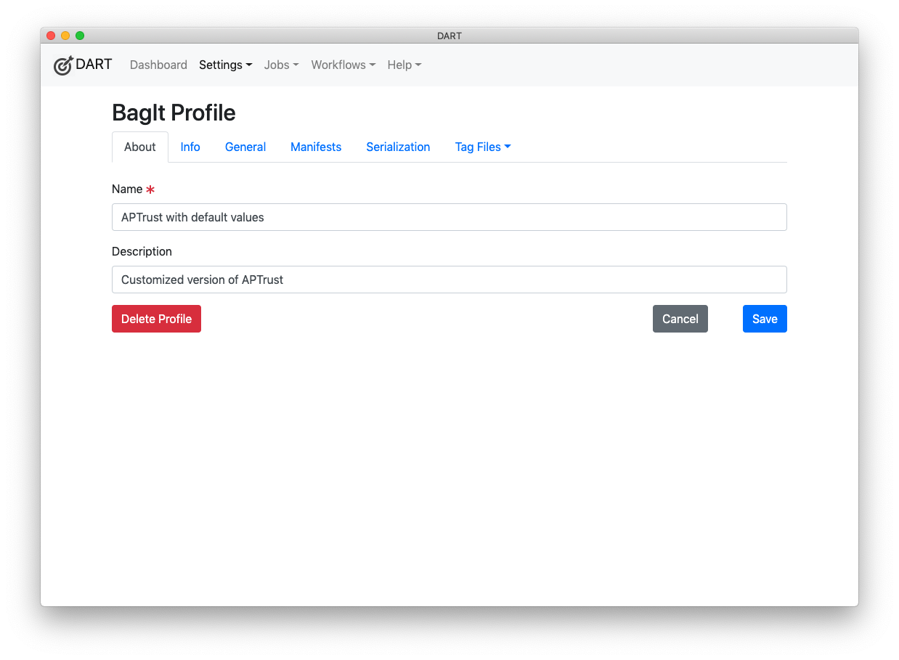

Customizing Profiles
To customize a BagIt profile, click the name of the profile in the profiles list, or click new and follow the steps to create a BagIt profile.

About
The About tab of the BagIt profile editor enables you to set a name and description for your profile.

Info
The Info tab includes fields to edit the BagIt-Profile-Info section of the profile. This includes the profile's URL identifier.

General
The General tab includes information about which BagIt versions your profile accepts, whether to allow fetch.txt files, and whether to allow miscellaneous top level files (arbitrary tag files directly under the root directory) and miscellaneous directories outside the payload (/data) directory.

Manifests
The Manifests tab specifies which manifests and tag manifests your profile requires. You can select multiple options from each list by holding down the Control key on Windows or the Command key on Mac while you click.

Serialization
The Serialization tab allows you to specify whether serialization is required, optional, or forbidden, as well as which serialization formats are supported. You can also specify here whether serialized bags must deserialize to a directory whose name matches the serialized file name. (For example, my_bag.tar must untar to my_bag and my_bag.zip must unzip to my_bag.)

Tag Files
The Tag Files tab includes a drop-down list for editing the profile's tag files, and for adding new tag files.

Adding a New Tag File
To add a new tag file:
-
Click Add New Tag File on the drop-down list.
-
Enter a name for the tag file. If the name includes slashes, the tag file will be created in a subdirectory beneath the bag's root directory. For example,
custom-tags/photo-credits.txtwould be placed in the bag's custom-tags directory. -
Click the Save button.

Editing a Tag File
To edit a tag file:
-
Click the Tag Files tab.
-
Select the name of the file you want to edit.
Adding a Tag
To add a tag to a tag file, click the New Tag button (visible in the screenshot above), then follow the steps in Editing a Tag below.
Editing a Tag
To edit a tag:
-
Click the name of the tag you want to edit.
-
Set the appropriate values in the dialog.
-
Tag Name - The name of the tag. This is required.
-
Required - A Yes/No value indicating whether the tag must have a value for the bag to be considered valid.
-
Values - An optional list of allowed values for this tag.
-
Default Value - An optional default value for this tag.
-
Help - An optional help message. This message will be displayed to users who are filling out a bag's tag values in DART.
-
-
Click the Save button.

Deleting a Tag
To delete a tag, click the red X to the right of the tag name in the tag list view. If the tag does not have a red X, it is a required tag from a published profile and cannot be deleted. When you delete the last tag of a tag file, DART deletes the tag file as well.
Deleting a Tag File
To delete a tag file, delete all of the tags in the file. See Deleting a Tag above.